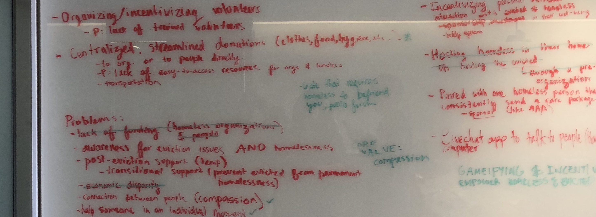

Fall 2019
(24 hours)
UX Designer
Adobe XD
Personas
Wireframing
Prototyping
This project was completed at a hackathon in November 2019 (Hacking for Humanity with Girls in Tech SF) and received an honorable mention from the judges. I worked in a team with four other people, and took ownership over the designs.
The topic of the hackathon was social and civic issues in the San Francisco community. Our goal was to address one issue in San Francisco and design a solution for it. In order to provide more context for potential projects, a couple of representatives from different community organizations were invited to speak about their organization’s respective missions.
One organization in particular stood out to my team – the St. Anthony Foundation, an organization that provides free services to the homeless community in San Francisco. We were drawn to the services that this organization provided for the community: a dining room that serve over 2,000 meals per day, a free technology center that allows homeless individuals access to computers, and many other programs.
My team wanted to explore the issue of homelessness even further. With over 800,000 residents and 8,000 homeless individuals in San Francisco, we knew we needed to incorporate human compassion into our project solution.
We identified three groups involved in this problem space:
My team preliminarily discussed several project ideas, including an Airbnb-type service to connect the homeless with willing hosts, or a way to simplify the eviction process for individuals before they become homeless. While these ideas would create a direct impact for the homeless community, we were concerned about the technology they would need to access these services. Because of this, we shifted our focus from homeless individuals to people who have the resources to contribute to the homeless community.
The idea of fostering a relationship with homeless individuals became a recurring topic because it would allow people to directly show compassion to the homeless community. We considered the idea of an independent sponsorship program to bridge these relationships, but ran into the problem of finding willing individuals to participate in the program.
Thinking back to the St. Anthony Foundation, we decided to leverage organizations like St. Anthony’s to form the foundation of these relationships. My team began considering ways to encourage people to volunteer at these organizations with the end goal of fostering relationships with the people they would be interacting with.
Bouncing around ideas for this was difficult, as my team members and I had differing opinions on how to approach the design of such a solution. I suggested coming up with user personas to narrow our scope of the project and help direct our decisions for the application.
My team came up with profiles for three individuals in San Francisco and defined their ideas about volunteering. We considered users who were in different life stages and shared a similar sentiment of not previously being involved with volunteer programs.
Defining the user personas helped my team ideate an experience that felt personalized but also low-commitment to encourage more volunteerism – with the ultimate goal of building a relationship with the homeless community. We didn’t consider user acquisition, as we assumed that people using the application would be those already interested in finding out how to volunteer.
Our first decision was to create a mobile application in order to represent the easy access to volunteering. To encourage user retention with the application, we decided to gamify the experience and allow users to earn badges and climb statuses as they continued to volunteer. We also decided to add a social component so users would be able to see their friends’ activities at organizations, further encouraging them to volunteer on their own time.
We took inspiration from Duolingo, a language learning application, and its onboarding experience for new users. In Duolingo’s onboarding process, users are asked to quickly assess their level of language mastery and outline their personal goals for the application, creating a personalized experience. These first few screens also give users a good idea of what to expect in the application.
For our onboarding experience, we gave new users the opportunity to take ownership over their volunteering journey by answering several questions on their goals for volunteering and categorizing the types of contributions they could make (time, money, and items). By simplifying their potential contributions, we also set the expectation that volunteering can be easy.
We also wanted to introduce the gamification features to further validate and reward users for taking the first step to becoming a volunteer.
By reducing the application to have only three main pages, the only major interaction users would have with the application would be with the Volunteer page. The Profile and Friends pages served as ways for users to track their progress and view their friends’ progress.

Our ultimate goal for this project was to empower the user through incentivizing volunteering and destigmatizing homeless shelter volunteering, and to empower the homeless through deepening relationships with consistent volunteers.
We presented our solutions through four avenues: Partnership, Gamification, Friends, and Humanization.
By eventually partnering with non-profit organizations such as St. Anthony’s in San Francisco, we hoped to directly connect volunteers with organizations through our mobile application and streamline the process of volunteers signing up and tracking their volunteering. Features like the Time page would allow volunteers to coordinate for the site supervisors and record their volunteer hours directly in the application. This feature would be useful for students who need volunteer hours, and would encourage volunteers to further foster relationships with those they meet at the organizations.
Gamifying the experience with achievements, status levels, and experience points gives an extra incentive for users to continue volunteering and using the application. With each item or monetary donation, or time spent volunteering, volunteers would gain experience points (XP) to level up as a volunteer. This feature would hopefully lead volunteers to develop the habit of voluntarily spending their time at charitable organizations. I designed all the icons to represent the status levels of a volunteer.
The friends feed would allow volunteers to see their friends’ status levels, recently acquired badges, and activities. One decision we came to was omitting the option to like or comment on activities, as we did not want volunteerism to become a competition with other people.
(Because this feature was one that was beyond the scope of our time at the hackathon, we filed away this idea as a future feature.) To bring it back to compassion as our core value and relationships as the end goal, we wanted to design an experience that would allow volunteers to have a one-to-one relationship with homeless individuals at these local organizations, or form a sponsorship-like program with them. Because every individual has a different story, we wanted to create a space for understanding and empathy in these relationships.
Designing this application from scratch was an exciting process. After being given the prompt and some time to think about how to “hack for humanity,” it was easy for my team to quickly jump around different project ideas, but remembering that every design process begins with the users helped us define a single project idea.
Given that this project was completed in a 24-hour hackathon, we were unable to complete any in-person user research on our initial idea and the end prototype I designed. As a result, a lot of our design decisions were based on assumptions of the user personas and off of one of our team members, as she was a high school student who needed volunteer hours for school. If we were given more time, I would have also done deeper research on the effects of gamification on activity retention.
Participating in this hackathon was a great opportunity to work alongside strangers who quickly became a cohesive team: two recent graduates, one high school student, one engineer, and one mother. Being able to witness many of their first introductions to design thinking in the first workshop confirmed my passion for user experience design, and encourages me even more to continue advocating for the user in everything I design.